pmpd
Physical Modelling for pd
Cyrille Henry
(cyrille.henry@la-kitchen.fr)
Abstract
pmpd is a collection of object for pd. These objects provide real-time simulations, specially physical behaviors. pmpd can be used to create natural dynamic systems, like a bouncing ball, string movement, Brownian movement, chaos, fluid dynamics, sand, gravitation, and more. It can also be used to create displacements thus allowing a completely dynamic approach of pd computing.
With pmpd physical dynamics can be modelled without knowing the global equation of the movement. Only the cause of the movement and the involved structure are needed for the simulation. pmpd provides the basic objects for this kind of simulation. Assembling them allows the creation of a very large variety of dynamic systems .
These object are designed to be used with pd (pd). pd is a real time graphical programming environment dedicated for audio signal processing. Pd allow the creation of object and it is well adapted of the creation of particular physical modelling. GEM is a pd library dedicated to images processing [14]. In the provided pmpd examples, GEM is used for the movement visualisation.
State of the art
Physical modelling is wildly used in audio/video synthesis. Physical modelling can be used to not only modelled real world sounds [4], it can also produce sound that are not found in nature (i.e. string out of glass etc..)
pmpd is an approach to models made of particles, which are only one of many possible dynamics system [7].
TAO synth is a software [3] dedicated to particular physical modelling for audio synthesis. It is not dedicated for real time use. TAO allow a wild range of excitations and resonant structures.
Cordis Anima is a particular physical modelling environment for comportment synthesis (with both audio and video). [9]
A common limitation is that personal computers do not allow rapid real time simulation for complex particular models.
pd is a real time programming environment for audio and video synthesis [2]. Moreover:
-it is a free software.
-it can be used on most personal computer and operating system
-the object oriented paradigm of pd is well adapted to such simulations
Since Max/MSP is very similar to pd (except for first point above!), the pmpd objects objects can be ported to Max/MSP, and used like the originals.
Some pd object already provide physical modelling, namely for audio synthesis [11] [10]. Since these objects do not aim to solve general physical modelling problems and often function at the audio rate, they are not well adapted to dynamic simulations.
On the other hand, some pd object provide high level comportment, like various chaos objects [6]. This kind of object can not really be modified or adapted to create more deterministic behavior.
pmpd provide a very flexible way to particle physical modelling simulation and other kind of comportment based model [8]. Using pmpd with pd programming environment allow real time interactions with this simulation. [5]
All of the pmpd objects work with control data (as opposed to audio signals). This means that they do not generate audio directly. However, they can easily be used to control audio engines, i.e.: you can not hear the sound of a vibrating string because it will not move enough fast; but you can use the movement of this particles along a string to perform additive synthesis.
This is the primary limitation of pmpd, dynamic modelling requires too much CPU to be performed at audio rates. It can only be used to generate comportments.
pmpd can be download here:
http://drpichon.free.fr/pmpd/download/
Introduction
natural comportment
The aim of pmpd is to create different kinds of behavior for sound and video processing using pd. Moreover, the modelling of dynamic physical systems can easily be done with pmpd.
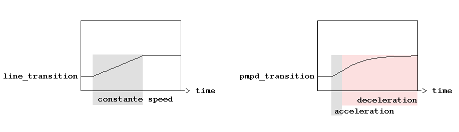
Figure
1: transition using “line” object or
pmpd objects.
Figure 1 shows two different kind of a parameter transitions. The first transition is made with a native pd object: “line” which can go to a value in a given amount of time. The second is made using pmpd objects.
The transition made with pmpd shows a more—so to say—“natural” evolution than the first one. It shows an acceleration and a deceleration time. The shape of the transition can be changed using physical values. This idea can also be used in audio synthesis, where one may desire the sound to be modulated in a “natural” way. pmpd is just providing an easy way in pd to generate this behavior.
The pmpd objects can also be used for more complex simulation, in a 1, 2 or 3 dimensions space. For instance, simulations of gas, paste, and sand can be made in real time on common personal computers.
Examples:
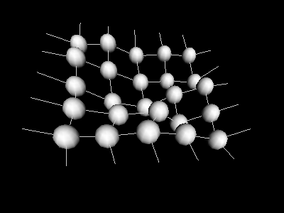
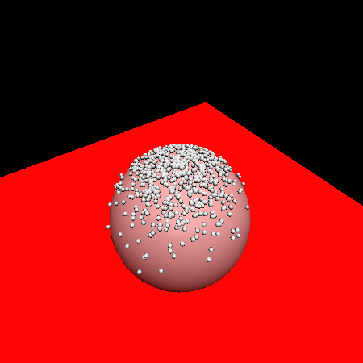
a) smalls particle falling on a 3D object b) 3D membrane
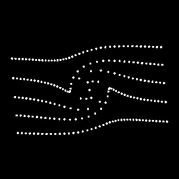
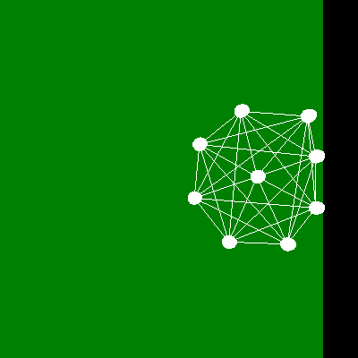
c) 2D fluid motion: vortex on a non viscus fluid d) 2D structure interacting with a “wall”
Figure 2: Different simulation using pmpd with pd and GEM
Figure 2 shows four different kinds of simulation using pmpd.
a) A few hundred small particle falling on a distorted sphere (3D simulation).
b) A small 3D membrane composed by a set of spherical masses and links between the masses. This structure is linked to a non moving referential. Forces can be appled to one or more masses. The structure can move in the same way as a square elastic membrane.
A 2D fluid dynamics simulation: pmpd is used to display some fluid particles in motion.
The motion and rebounding of a “ball” is modelled in 2D with 9 masses.
You can find the patch used for the generation of these pictures in the pmpd examples files.
Real-time simulation
To allow real time interaction, “Mass” objects accept force and displacement messages from the user. pd can then be use to provide automation or interaction between the user and the simulation. The extreme modularity of pd can offer a very large variety of interaction with the simulation.
Bases
This library is designed to provide hight level objects (each pmpd object can be made as pd abstraction). These objects are low level comportment objects. Assembling these objects can generate complex behavior due to the interaction of the basic objects.
pmpd implements the basic objects thus allowing particle-base physical modelling.
Very complex behaviors can be simulated without knowing the global equation of the movement. Only the cause of the movement and the evolved structure are needed for the simulation. pmpd can then easily be used for the simulation of a very large variety of comportment.
Complex simulations are basically made using two kind of elementary objects: “mass” and “link”.
Mass
“mass” objects react like a piont mass. It takes forces at its input, and output its position. It move according to the Newtonian dynamics:
∑F = m γ
“mass” objects got inertia, but they are punctual (they can not rotate).
For each time iteration, they make the summation of forces apply to their inlet to know the acceleration to have (positive or negative).
Link
“link” objects take two mass positions and output two opposite forces depending on the relative position and speed of the masses.
Links are visco-elastic connections between two masses, we will see other kind of link later.
Hook's law describes the elasticity:
F = K X
where K is the rigidity and X is the elongation of the link.
Viscosity is modelled with:
F = D V
where D is the damping of the link and V is the relative speed of two masses.
The force generated by a visco-elastic link is the sum of these two forces.
F = K X + D V
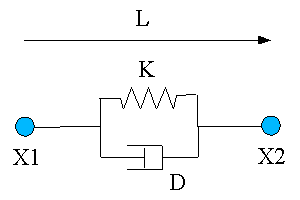
Figure 3: overview of a link
Units
pmpd does not use specific units, you can chose your own. However, you should try to use units you that are consistent. i.e: you chose inches for the distance unit, then rigidity unit should be force unit divide by inches. Things are relative: a mass weighting 10 will react the same way to a force of 1 than a mass of 100 to a force of 10.
Metronome
A time reference is needed to compute the simulation. pmpd uses an “external” scheduler.; the user has to send a scheduler event to pmpd object.
This mechanism was chosen purposefully. The desired advantages were:
-You can easily change the speed of the simulation (adjust on the CPU speed).
-You can stop different parts of the simulation when you do not need them.
-You can synchronise to video rendering if desired.
-pmpd needs to compute all mass movement together and all link interaction together.
An external metronome is well adapted to this task.
The speed of the metronome should depend of the speed of the movement you want to simulate. There is no general law to know the metronome speed, but: the faster the metro, the faster the simulation can be. The metronome should be faster than the highest frequency of the movement you want to simulate.
The metronome corresponds with the time discretization of the equations.
States of the model are computeed in discreet time. i.e. displacement of a mass is not a function, but a finite serial of point: X(n).
Velocity at time = t: V(t) is define by:
X(t) – X(t-1)
dT
dT is the small time delta between two consecutive iterations.
Similarly, acceleration at time t is define by:
V(t) – V(t-1)
dT
So Acceleration (γ ) is:
X(t-2) – 2X(t-1) + X(t)
dT2
including equation: ∑F = m γ gives:
X(t) = ∑F * C – X(t-2) + 2X(t-1)
where the constant C is given by:
C = dT2
m
pmpd gives a default value of 1 to dT2 .
This shows how to compute the current position of a mass while knowing the force applied to it and its last two positions.
Name
For patching simplification mass and link objects have a name. It is the first argument for the object creation. It is used to receive information (pd messages). All masses with the same name defined a class of mass.
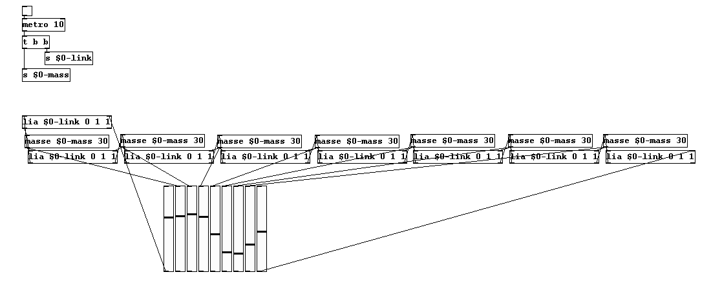
figure
4: sending bang without connection
Figure 4 shows how “bang” massages are pass to a set of masses and linsk without creating pd connection.
It can save patching time, and should be used for patch simplification.
Interactors objects
Interactor objects act as link object but provide patching facility.
In effect, a single object can create an interaction with a entire class of masses.
Interactor objects should be created with a name. This name is the name of the masses it is connected to.
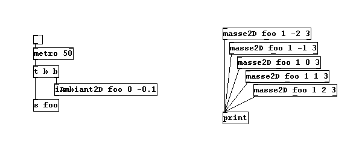
Figure
5: sending forces to a class of mass
In Figure 5, all masses are subject to an ambient constant force. This force can viewed as gravity force applied to every mass named “foo”.
Masses with other name will not be sensitive to this interactor. Different interactor objects provide interactions with a point, a line and other simple primitives.
Test objects
The objects test the position—as well as distance, speed from a point, a line, orientation...—of a mass. Thereby, pd has access to much informations regarding the state of the system. This allows interaction with the rest of the patch. Another test object gives information about the link (deformation, speed of deformation, orientation...)
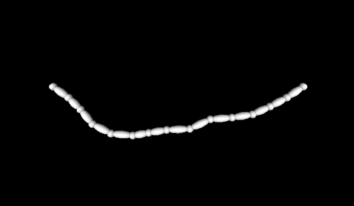
Figure 6: “tLink” example
Figure 6 shows how to use the “tLink2D” object to determine the size and orientation of a rendered link between two spherical masses.
Displacement
Masses can also be displaced without inertia (translated), according to displacement message. This is not physical behavior, but can be useful for different reasons:
-If you know the global equation of a movement, you can use displacement message to simulate this equation (like in the provided vertex examples).
-You can use this to create non “unnatural” movements of your desire
Using pmpd
Compilation
The pmpd library only performs mathematical calculations, so there is no dependencies. Compilation should be very easy: Go to the pmpd folder and type make pd_linux, pd_darwin or pd_nt depending on the platform you are using. For other platforms, you should modify the makefile.
In any case, binary files are provide for this 3 OS (compiled for pd 0.37).
Installation
For testing pmpd, you can load “00_pmpd” patch: it will load the library in pd's memory (if pmpd lib is in the same directory). All pmpd object can then be created.
For daily use, you can put pmpd somewhere pd will find it (or add -path were_pmpd_is)
then add -lib pmpd on you command line (in the .pdrc file for linux / OSX user, or in your .bat file for win32 users). You should now see the pmpd text line on the pd log when you start pd.
You should also move the help files to your /pd/doc/5.reference directory.
Examples
The best way to understand the capabilities of pmpd is to try the set of examples. These examples provide a wild range of different applications of pmpd, and some explanation of how pmpd works. You need a recent version of pd (i.e. 0.37, not tested on earlier versions). Most of the examples use GEM for the visualisation of the virtual world. GEM 0.888 is recommended: some examples may not work on earlier version. There are no other dependencies.
GEM is then needed to use the examples. But there is no need to have gem to use pmpd: you can use it only for audio synthesis.
The aim of the provided examples is only to describe behavior of a system, not to make artful graphical effects.
After seeing the examples, you can try creating your first patch using these objects. Look at the help files for more specific information on each object.
Using pmpd with pd
“Mass” and “link” objects have to be connected in the following way:
-“mass” objects send position and receive force from “link” objects
-“link” objects receive two mass positions and output forces for both masses
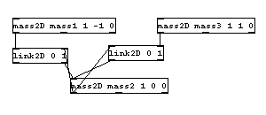
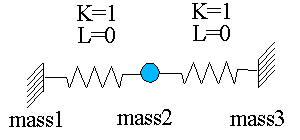
Figure
7: a small system, and it's equivalent using pmpd
and pd
In figure 7, mass 1 and 3 do not receive forces (inlet are not connected), therefore they will never move; they act like a fixed point. Mass 2 is linked to 2 fixed points with springs with no damping. Hence, movement will never end (it corresponds with a system without energy loss).
“mass” objects have outlets for their internal state; they report their position, the total force applied to them and their speed. This parameters can be used to generate data controlling audio/video synthesis.
A single mass/spring acts as a low pass filter. You can use pmpd to filter data, to do other kind of data treatment, or to make variations more “natural” behavior for the evolution of an audio or video process.
Topology
A structure and its components can be modelled according to the topology, that is a defined set of interactions: different dynamic systems can be modelled using different topologies.
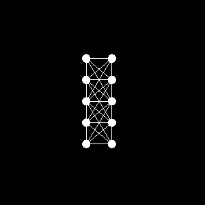
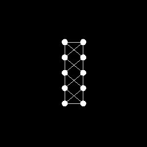
Figure 8: Two different topology for the same object.
Figure 8 is an example of a two different topologies. Masses are the spheres, link are the white lines. The same set of masses are link in two different way. The physical behavior of this structure will differ according to its topology.
Generality
All objects can be created using “pmpd.name” where name is the name of a specific object. This can be used to avoid name conflicts with other objects.
Most of the objects parameters can be set at the creation of the object as argument, but they can be modified using a messages sent to the first inlet.
It is possible to choose non-physical values for pmpd parameters. For example, you can set damping to a negative value, which mean energies creation. This is not physical and can lead to instability or saturation of the model, but can be useful for artistic reason.
You should also take care while changing parameters like rigidity. This can lead to energy creation or lost, depending of the deformation of the structure.
The most important problem using physical modelling is the instability. To reduce the risk of instability you should slow down your model (increasing the metronome speed can be necessary to keep the desired speed of the simulation). Reducing force in the simulation is usually a good way to attack instability problems. Initialising masses close to a stable state can also help.
Especially with the mass class reference system, pmpd may perform many calculations at the same time. This can require much of CPU usage. Long audio buffer may help to avoid audio clicks.
Objects reference
mass
description:
This is a 1D mass. This object's inlet need forces (float), and outlet it's position (float).
All forces send to it's inlet are add together. A bang allow the mass to compute it's new position, and to output it. The mass can move due to it's inertia.
creators:
mass, pmpd.mass, masse
arguments (default value):
1: name of the mass
2: weight of the mass (1)
3: initial position (0)
inlet 1:
bang:
compute new position of the mass, according to the forces apply to it.
float:
add a force. Each forces are add together.
dX float:
displace the mass without inertia.
setM float:
change the weight of this mass.
setX float:
force the mass to a certain position. Reset inertia and forces. Output new position.
setXmin float:
set the minimum position of the mass.
setXmax float:
set the maximum position of the mass. The mass can 't go above this values.
reset:
reset position to it's initial state, force and inertia to zero. Output new position.
loadbang:
output initial position on initialisation
Outlet 1:
position (float): position of the mass according to it's inertia, and forces
Outlet 2:
force (float): global force apply to the mass
Outlet 3:
velocity (float): global velocity of the mass
link
description:
This is the 1D link between masses. This object is used to link 2 masses together to allow interaction between them. Interaction is mainly visco-elastic. Position of the 2 masses are receive too the corresponding inlets. Forces is compute and output when this object receive a bang.
Creators: link, pmp.link, lia
arguments (default value):
1: name of the link.
2: L: length of the link without deformations. (0)
3: K: rigidity coefficient (0)
4: Damping (0)
5: Damping 2 (0)
Figure 9: Topology of a single link
inlet 1:
bang:
compute forces according to masses position and speed.
float:
position of the 1st mass
setK float:
Set rigidity of the link. Rigidity force is: F = K (L-L0). This force is apply symmetrically to the 2 masses.
setL float:
Set initial length of the link. (change L0 value)
setLmin float:
Set minimum length of the link. If L < Lmin, then output of the link will be 0. (initial value: -100000)
setLmax float:
Set maximum length of the link. If L > Lmin, then output of the link will be 0
(initial value: 100000)
setD float:
Set the link viscosity. This corresponding to the deformation speed of the link. Damping force is: F = D (VX1 – VX2). This force is apply symmetrically to the 2 masses. (VX1 is the velocity of X1)
setD2 float:
Set velocity damping. (corresponding to speed of each mass). Force generated by this factor is not symmetrical. This force is: F1 = D2 * VX1 for the first mass (and
F2 = D2 * VX2 for the 2nd one).
reset:
reset all internal state of the link.
resetF:
reset internal state, in a way generated forces will be null (damping)
resetL:
set the length of the link without deformation to it's currents length.
With can be used to create topology by placing the masse, and then the link can adapt them self to the shape of the topology.
inlet 2:
float:
position of the 2nd mass
outlet 1:
float:
force to apply to the 1st mass
outlet 2:
float:
force to apply to the 2nd mass
If K, D and D2 = 0, then forces generated by the link will be null.
mass2D
description:
This is the 2D mass. This object's inlet need forces, and outlet it's position.
All forces send to it's inlet are add together. A bang allow the mass to compute it's new position, and to output it. The mass can move due to it's inertia. This is like the 1D object, but forces / displacement append in 2D.
creators:
mass2D, pmpd.mass2D, masse2D
arguments:
1: name of the mass
2: weight of the mass (1)
3: initial position X (0)
4: initial position Y (0)
5: X min (-100000)
6: X max (10000)
7: Y min (-100000)
8: Y max (10000)
9: Threshold (0)
inlet 1:
bang:
comput new position of the mass, according to the forces apply to it.
force2D float float:
add a force. Each forces are add together.
setM float:
change the weight of this mass.
setXY float float:
force the mass to a certain position. Reset inertia and forces. Output new position.
setX float:
force the mass to a certain position (only X coordinate). Reset inertia and forces. Output new position.
setY float:
force the mass to a certain position. Reset inertia and forces. Output new position.
setXmin float:
set the X minimum position of the mass.
setXmax float:
set the X maximum position of the mass.
setYmin float:
set the Y minimum position of the mass.
setYmax float:
set the Y maximum position of the mass. The mass can 't go above this values.
setT float:
Set the threshold of the mass. This is for solid friction to the wall simulation. (useful only for friction on Xmin, Xmax, Ymin, Ymax limits)
dXY float float:
displace the mass without inertia (X and Y displacement).
dX float:
displace the mass without inertia.(X displacement)
dY float:
displace the mass without inertia.(Y displacement)
reset:
reset position to it's initial state, force and inertia to zero. Output new position.
resetF:
reset force and displacement to zero. Does not change position.
off:
stop the movement of the mass. (the mass will not react to bang message, but can get forces messages)
on:
start the movement of the mass.
interactor_...
apply forces to the mass due to interactors position and comportment.
See later
loadbang:
output initial position on initialisation
outlet 1:
position2D float float: X and Y new position of the mass
outlet 2:
force2D float float float: X, Y and global force apply to the mass
outlet 3:
velocity2D float float float: X, Y and global velocity of the mass
(only outlet 1 is needed for the simulation, the other are here to provide information for audio or video synthesis)
link2D
description:
This is the 2D link between 2D masses. This object is used to link 2 masses together to allow interaction between them. Interaction is mainly visco-elastic. Position of the 2 masses are receive to the corresponding inlets. Forces is compute and output when this object receive a bang.
Creators: link2D, pmp.link2D, lia2D
arguments (default value):
1: name of the link.
2: L: length of the link without deformations. (0)
3: K: rigidity coefficient (0)
4: Damping. This is the damping corresponding to the deformation speed of the link) (0)
5: Damping 2. Damping corresponding to speed of each mass. Force generated by this factor is not symmetrical. (0)
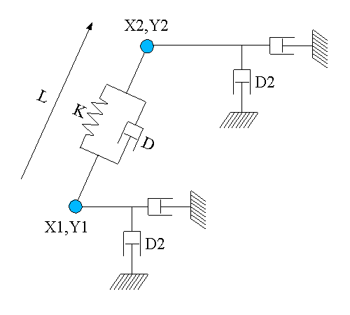
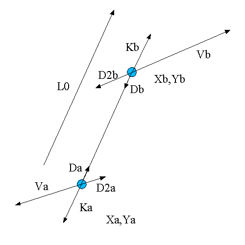
Topology
of a single link2D Forces generate by this link
Figure 10: Link2D topology
Damping and rigidity forces are parallel to the link, while D2 is parallel to the velocity of the mass
Da = - Db
and
Ka = - Kb
The global generated force is:
Fa = Ka + Da + D2a
and
Fb = Kb + Db + D2b
inlet 1:
bang:
compute forces according to masses position and speed.
Position2D float float:
position of the 1st mass (X, Y)
setK float:
Set rigidity of the link. Rigidity force is: F = K (L-L0). This force is apply symmetrically to the 2 masses.
setL float:
Set initial length of the link. (change L0 value)
setLmin float:
Set minimum length of the mass. If L < Lmin, then output of the link will be 0
setLmax float:
Set maximum length of the mass. If L > Lmin, then output of the link will be 0
setD float:
Set the link viscosity. Damping force is: F = D (VX1 – VX2). This force is apply symmetrically to the 2 masses. (VX1 is the velocity of X1)
setD2 float:
Set velocity damping. This force is: F1 = D2 * VX1 for the first mass (and
F2 = D2 * VX2 for the 2nd one).
reset:
reset all internal state of the link.
resetF:
reset internal state, in a way generated forces will be null
resetL:
set the length of the link without deformation to it's current length.
Which can be used to create topology by placing the mass, and then the link can adapt them self to the shape of the topology.
inlet 2:
Position2D float float:
(X, Y) position of the 2nd mass
outlet 1:
force2D float float:
force to apply to the 1st mass
outlet 2: force2D float float:
force to apply to the 2nd mass
tLink2D
description:
This is a test object. It only output informations about a specific link on 2 masses. You should connect it's inlet like a normal link connection. It's outlet correspond to internal variables of a link.
creators: tLink2D, pmpd.tLink2D, tLia2D
arguments (default value):
1: name of the link (to allow receiving bang). (It also receive other message desalinated to a link without complaining)
inlet 1:
bang:
output information of the specific link.
position2D float float:
position of 1st mass
inlet 2:
position2D float float:
position of 2nd mass
outlet 1:
float:
distance between two masses
outlet 2:
float:
length variation speed of the link
outlet 3:
float:
orientation of the link (degree angle)
outlet 4:
position2D float float:
position of the center of the link
iambient2D
description:
Create an interaction between ambient space and a class of masses. The class of masses is set with masses name.
Interactor create different force depending of the mass speed and position. So it should be used like a link. Interactors object should then be banged in the same time as link objects.
They should be used to create multiples connection, and should then create patching simplifications.
A single interactor can create lot's of link.
creators: iambient2D, pmpd.iambient2D
arguments (default value):
1: name of the mass (send interactors informations to this masses)
2: FX (constant X force apply to the masses) (0)
3: FY (constant Y force apply to the masses) (0)
4: Rnd FX (random X force apply to the masses) (0)
5: Rnd FY (random Y force apply to the masses) (0)
6: Damping (velocity damping of the masses) (0)
7: Xmin (-100000)
8: Xmax (100000)
9: Ymin (-100000)
10: Ymax (100000)
11: dX (0)
12: dY (0)
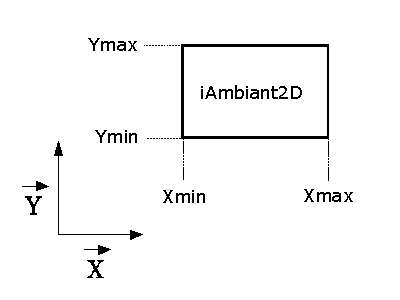
Figure
11: ambient interactor.
inlet 1:
bang
send to the masses the position and internal states of the interactors
setFXY float float
change the constant force (X, Y) to apply to a mass interacting with this object
setFX float
change the constant force (X) to apply to a mass interacting with this object
setFY float
change the constant force (Y) to apply to a mass interacting with this object
setRndFX float
change the random maximum force (X) to apply to a mass interacting with this object
setRndFY float
change the random maximum force (Y) to apply to a mass interacting with this object
dXY float
displace the mass without inertia.
dX float
displace the mass without inertia.(X displacement)
dY float
displace the mass without inertia.(Y displacement)
setD float
change damping factor of the interactor.
setXmin float
set the X minimum position of the interactor.
setXmax float
set the X maximum position of the interactor.
setYmin float
set the Y minimum position of the interactor.
setYmax float
set the Y maximum position of the interactor. The mass don't interact with this interactor if it's outside it's bounds.
outlet 1:
output a method for the mass2D, to allow interaction with this object.
You can make a mass to interact with the interactor by two different way:
set the name of the interactor to the name of the mass.
Connect interactor output to mass 1st inlet.
tSquare2D
description:
Test object. This object should be used to test position of a specific mass.
creators: tSquare2D, pmpd.tSquare2D
arguments (default value):
1: Xmin (-1)
2: Xmax (1)
3: Ymin (-1)
4: Ymax (1)
inlet 1:
setXmin float
set the X minimum (Xmin) position of the test.
setXmax float
set the X maximum position of the test.
setYmin float
set the Y minimum position of the test.
setYmax float
set the Y maximum position of the test.
inlet 1:
position2D float float: position off a mass
outlet:
float (0 / 1): 0 if the mass is outside the square define with Xmin, Xmax, Ymin, Ymax.
iCircle2D
description:
Create an interaction between a part of the space and a class of masses. This interactor act as a link to a point. (the center on the interactor point can be change, So this object can be set The class of masses is set with masses name.
creators: iCircle2D, pmpd.iCircle2D
arguments (default value):
1: name of the mass to interact with
2: X0: X coordinate of the center of the interactor (0)
3: Y0: Y coordinate of the center of the interactor (0)
4: Rmin: minimum radius of the interactors (0)
5: Rmax: maximum radius of the interactor (1)
6: normal constant force (force along n vector) (0)
7: tangential constant force (force along t vector) (0)
8: normal rigidity(normal force proportional to P (depth of the mass)) (0)
9: tangential rigidity (tangential force proportional to P (depth of the mass)) (0)
10: normal force proportional to 1/R (0)
11: tangential force proportional to 1/R (0)
12: normal damping (damping due tu normal velocity) (0)
13: tangential damping (0)
14: normal displacement proportional to 1/R (0)
15: tangential displacement proportional to 1/R (0)
16: link damping (0)
17: normal force proportional to 1/R2 (0)
18: normal displacement (0)
19: tangential displacement (0)
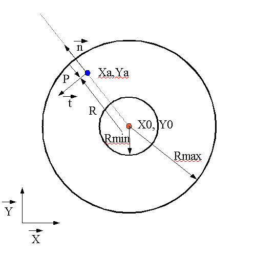
Blue point is a mass, red point is the center of the interactor
Figure 12: iCircle2D
inlet 1:
bang
send to the masses the position and internal states of the interactors
setXY float float
set the (X, Y) position of the interactor.
setX float
set the X position of the interactor.
setY float
set the Y position of the interactor.
setRmin float
set the minimum radius of the interactor
setRmax float
set the maximum radius of the interactor
setFN float
change the normal constant force to apply to a mass interacting with this object
setFT float
change the normal constant force to apply to a mass interacting with this object
setKN float
change the normal rigidity to apply to a mass interacting with this object
setKT float
change the tangential rigidity to apply to a mass interacting with this object
setDN float
change the normal damping
setDT float
set the tangential damping
setD float
set link damping
setRN float
change the normal force proportional to 1/R to apply to the mass
setRT float
change the tangential force proportional to 1/R to apply to the mass
setdN float
change the normal displacement
setdT float
change the tangential displacement
setG float
change the force proportional to 1/R2
setdRN float
change the normal displacement proportional to 1/R to apply to the mass
setdRT float
change the tengential displacement proportional to 1/R to apply to the mass
outlet 1:
output a method for the mass2D, to allow interaction with this object.
tCircle2D
description:
this is the test object associated with iCircle2D. It can test different things associated with the position or movement of a mass among a circle.
creators: tCircle2D, pmpd.tCircle2D
arguments:
1: X0: X coordinate of the center of the interactor (0)
2: Y0: Y coordinate of the center of the interactor (0)
3: Rmin: minimum radius of the interactors (0)
4: Rmax: maximum radius of the interactor (0)
inlet 1:
setXY float float
set the (X, Y) position of the interactor.
setX float
set the X position of the interactor.
setY float
set the Y position of the interactor.
setRmin float
set the minimum radius of the interactor
setRmax float
set the maximum radius of the interactor
outlet:
1: float (0/1) tells if the mass is in the in the Circle or not (R<Rmax & R>Rmin)
2: float: distance form the center of the circle
3: speed from the center of the circle
iLine2D
description:
Create an interaction between a part of the space and a class of masses. This interactor act as a link to a line. (the line is define with 2 points). It react like all interactors objects.
creators: iLine2D, pmpd.iLine2D
arguments:
1: name of the mass
2: X1 (-1)
3: Y1 (0)
4: X2 (1)
5: Y2 (0)
6: Maximum depth (1)
7: Normal constant force (0)
8: tangential constant force (0)
9: Normal rigidity (0)
10: Normal Damping (0)
11: Tangential damping (0)
12: normal displacement (0)
13: tangential displacement (0)
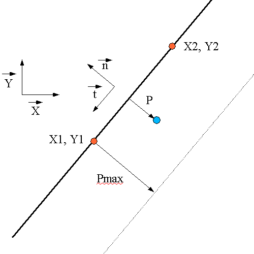
Figure 13: tLine2D topology
inlet 1:
bang
send to the masses the position and internal states of the interactors
setX1 float
set X1
setY1 float
set Y1
setX2 float
set X2
setY2 float
set Y2
setPmax float
set the depth of the interaction
setFN float
change the normal constant force to apply to a mass interacting with this object
setFT float
change the tangential constant force to apply to a mass interacting with this object
setKN float
change the normal rigidity to apply to a mass interacting with this object
setDN float
change the normal damping
setDT float
set the tangential damping
setdN float
change the normal constant displacement
setdT float
change the tangential constant displacement
outlet 1:
output a method for the mass2D, to allow interaction with this object.
tLine2D
description:
this is the test object associated with iLine2D. It can test different things associated with the position or movement of a mass among the line.
Creators: tLine2D, pmpd.tLine2D
arguments:
1: X1: X coordinate of the center of the interactor
2: Y1: Y coordinate of the center of the interactor
3: X2: X coordinate of the center of the interactor
4: Y2: Y coordinate of the centerr of the interactor
5: Pmax: maximum depth of the interactors
inlet 1:
setXY float float
set the (X, Y) position of the interactor.
setX float
set the X position of the interactor.
setY float
set the Y position of the interactor.
setPmax float
set the maximum depth of the interactor
outlet:
1: float (0/1) tells if the mass is in the in a Line interaction or not
2: float: distance form the line
3: speed regarding the distance of the line
iSeg2D
description:
Create an interaction between a part of the space and a class of masses. This interactor act as a link to a segment. (the segment is define with 2 points). It react like all interactors objects.
creators: iSeg2D, pmpd.iSeg2D
arguments:
1: name of the mass
2: X1 (-1)
3: Y1 (0)
4: X2 (1)
5: Y2 (0)
6: Maximum depth (1)
7: Normal Constant Force (0)
8: tangential Constant Force (0)
9: Normal rigidity (0)
10: Normal Damping (0)
11: Tangential damping (0)
12: normal displacement (0)
13: tangential displacement (0)
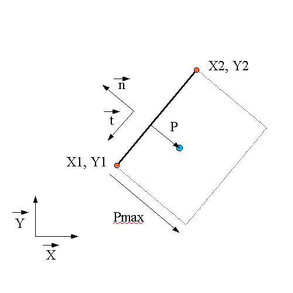
Figure 14: tSeg2D topology
inlet 1:
bang
send to the masses the position and internal states of the interactors
setX1 float
set X1
setY1 float
set Y1
setX2 float
set X2
setY2 float
set Y2
setPmax float
set the depth of the interaction
setFN float
change the normal constant force to apply to a mass interacting with this object
setFT float
change the tangential constant force to apply to a mass interacting with this object
setKN float
change the normal rigidity to apply to a mass interacting with this object
setDN float
change the normal damping
setDT float
set the tangential damping
setdN float
change the normal displacement
setdT float
change the tangential displacement
outlet 1:
output a method for the mass2D, to allow interaction with this object.
tSeg2D
description:
this is the test object associated with iSeg2D. It can test different things associated with the position and movement of a mass among the line.
Creators: tLine2D, pmpd.tLine2D
arguments:
1: X1: X coordinate of the center of the interactor
2: Y1: Y coordinate of the center of the interactor
3: X1: X coordinate of the center of the interactor
4: Y1: Y coordinate of the center of the interactor
5: Pmax: maximum depth of the interactors
inlet 1:
setXY float float
set the (X, Y) position of the interactor.
setX float
set the X position of the interactor.
setY float
set the Y position of the interactor.
setRmin float
set the minimum radius of the interactor
setRmax float
set the maximum radius of the interactor
outlet:
1: float (0/1) tells if the mass is in the in a Line interaction or not
2: float: distance form the segment
3: speed regarding the distance to the segment
mass3D
description:
This is the 3D mass (a mass which can move in 3 dimension). This object's inlet need forces, and outlet it's position.
All forces send to it's inlet are add together. A bang allow the mass to compute it's new position, and to output it. The mass can move due to it's inertia. This is like the 3D object, but forces and displacement append in 3D.
creators:
mass3D, pmpd.mass3D, masse3D
arguments:
1: name of the mass
2: weight of the mass
3: initial position X
4: initial position Y
5: initial position Z
6: X min
7: X max
8: Y min
9: Y max
10: Z min
11: Z max
12: Threshold
inlet 1:
bang:
compute new position of the mass, according to the forces apply to it.
force3D float float float:
send a force to the mass. Each forces are add together.
setM float:
change the weight of this mass.
setXYZ float float float:
force the mass to a certain position. Reset inertia and forces. Output new position.
setX float:
force the mass to a certain position. Reset inertia and forces. Output new position.
setY float:
force the mass to a certain position. Reset inertia and forces. Output new position.
setZ float:
force the mass to a certain position. Reset inertia and forces. Output new position.
dXYZ float float float:
displace the mass without inertia (X , Y and Z displacement).
dX float:
displace the mass without inertia (X displacement).
dY float:
displace the mass without inertia (Y displacement).
dZ float:
displace the mass without inertia (Z displacement).
setXmin float:
set the X minimum position of the mass.
setXmax float:
set the X maximum position of the mass.
setYmin float:
set the Y minimum position of the mass.
setYmax float:
set the Y maximum position of the mass.
setZmin float:
set the Z minimum position of the mass.
setZmax float:
set the Z maximum position of the mass. The mass can 't go above this values.
setT float:
Set the threshold of the mass. When
the mass is at Xmin, Xmax, Ymin or Ymax, then a threshold is apply
to the force: if the force apply to the mass is inferior to the
threshold, then no movement will be generated. This is for solid
friction to the wall simulation.
reset:
reset position to it's initial state, force and inertia to zero. Output new position.
resetF:
reset total force applied to the mass.
off:
stop the movement of the mass.
on:
start the movement of the mass.
interactor_...
apply forces to the mass due to interactors position and comportment.
See later
loadbang:
output initial position on initialisation
outlet 1:
position3D float float float: X, Y, Z new position of the mass
outlet 2:
force3D float float float float: X, Y, Z and global force apply to the mass
outlet 3:
velocity3D float float float float: X, Y, Z and global velocity of the mass
(only outlet 1 is needed for the simulation, the other are here to provide information for audio or video synthesis)
link3D
description:
This is like the link2D but for 3D simulation. This object is used to link 2 masses together to allow interaction between them. Interaction is mainly visco-elastic. Position of the 2 masses are receive to the corresponding inlets. Forces is compute and output when this object receive a bang.
This object is similar to link2D, but in 3 dimensions...
Creators: link3D, pmp.link3D, lia3D
arguments (default value):
1: name of the link.
2: L: length of the link without deformations. (0)
3: K: rigidity coefficient (0)
4: Damping. This is the damping corresponding to the deformation speed of the link) (0)
5: Damping 2. Damping corresponding to speed of each mass. Force generated by this factor is not symmetrical. (0)
The topology of a 3D link is the same than a 2D link.
inlet 1 (default value):
bang:
compute forces according to masses position / speed.
Position3D float float float: (0 0 0)
(X, Y, Z) position of the 1st mass
setK float: (0)
Set rigidity of the link. Rigidity force is: F = K (L-L0). This force is apply symmetrical to the 2 masses.
setL float: (0)
Set initial length of the link. (change L0 value)
setLmin float: (0)
Set minimum length of the mass. If L < Lmin, then output of the link will be 0
setLmax float: (10000)
Set maximum length of the mass. If L > Lmin, then output of the link will be 0
setD float: (0)
Set the link viscosity. Damping force is: F = D (VX1 – VX2). This force is apply symmetrical to the 2 masses. (VX1 is the velocity of X1)
setD2 float: (0)
Set velocity damping. This force is: F1 = D2 * VX1 for the first mass (and
F2 = D2 * VX2 for the 2nd one).
reset:
reset all internal state of the link.
resetF:
reset internal state, in a way generated forces will be null
resetL:
set the length of the link without deformation to the currents length.
this can be used to create topology by only placing the mass, the link can then adapt them-self to the shape of the topology.
inlet 2:
Position3D float float float (0 0 0): (X, Y, Z) position of the 2nd mass
outlet 1:
force3D float float float: force to apply to the 1st mass
outlet 2:
force3D float float float: force to apply to the 2nd mass
tLink3D
description:
This is a test object. It only output informations about a specific kink on 2 masses. You should connect it's inlet like a normal link connection. It's outlet correspond to internal variables of a link.
creators: tLink3D, pmpd.tLink3D, tLia3D
arguments (default value):
1: name of the link (to allow receiving bang. It also receive other message destinated to a link without complaining)
inlet 1:
bang:
compute and output information about the link2D
position3D float float:
position of 1st mass
inlet 2:
position3D float float: position of 2nd mass
outlet 1:
distance between two masses
outlet 2:
float: length variation speed of the link
outlet 3:
orientation of the link ( normal vector (X, Y, Z) of the link)
outlet 4:
position3D float float float: position of the center of the link
iambient3D
description:
Create an interaction between ambient space and a class of masses. The class of masses is set with masses name.
Interactor create different forces depending of the mass speed and position. So it should be used like a link. Interactors object should then be banged in the same time as link objects.
They should be used to create multiples connection, and should then create patching simplifications.
creators: iambient3D, pmpd.iambient3D
arguments (default value):
1: name of the mass (send interactors informations to this masses)
2: FX (constant X force apply to the masses) (0)
3: FY (constant Y force apply to the masses) (0)
4: FZ (constant Z force apply to the masses) (0)
5: Rnd FX (random X force apply to the masses) (0)
6: Rnd FY (random Y force apply to the masses) (0)
7: Rnd FZ (random Z force apply to the masses) (0)
8: Damping (velocity damping of the masses) (0)
9: Xmin (minimum and maximum limit of the interactors) (-10000)
10: Xmax (a mass interact with this object only if it is inside the interactor bounds) (10000)
11: Ymin (-10000)
12: Ymax (10000)
13: Zmin (-10000)
14: Zmax (10000)
15: dX (displace the mass by a constant value) (0)
16: dY (0)
17: dZ (0)
inlet 1:
bang
send to the masses the position and internal states of the interactors
setFXYZ float float
change the constant force (X, Y, Z) to apply to a mass interacting with this object
setFX float
change the constant force (X) to apply to a mass interacting with this object
setFY float
change the constant force (Y) to apply to a mass interacting with this object
setFZ float
change the constant force (Z) to apply to a mass interacting with this object
setRndFX float float
change the random maximum force (X) to apply to a mass interacting with this object
setRndFY float float
change the random maximum force (Y) to apply to a mass interacting with this object
setRndFZ float float
change the random maximum force (Z) to apply to a mass interacting with this object
dXYZ float
displace the mass without inertia.(X, Y and Z displacement)
dX float
displace the mass without inertia.(X displacement)
dY float
displace the mass without inertia.(Y displacement)
dZ float
displace the masse without inertia.(Z displacement)
setD float
change damping factor of the interactor.
setXmin float
set the X minimum position of the interactor.
setXmax float
set the X maximum position of the interactor.
setYmin float
set the Y minimum position of the interactor.
setYmax float
set the Y maximum position of the interactor
setZmin float
set the Z minimum position of the interactor.
setZmax float
set the Z maximum position of the interactor. The mass don't interact with this interactor if it's outside it's bounds.
outlet 1:
output a method for the mass3D, to allow interaction with this object.
You can make a mass to interact with the interactor by two different way:
set the name of the interactor to the name of the mass.
Connect interactor output to mass 1st inlet.
tCube3D
description:
Test object. This object should be used to test position of a specific mass.
creators: tCube3D, pmpd.tCube3D
arguments (default value):
1: Xmin (minimum and maximum limit of the interactors) (
2: Xmax (a mass interact with this object only if it is inside the interactor bounds)
3: Ymin
4: Ymax
3: Zmin
4: Zmax
inlet 1:
position3D float float float
position of a mass
setXmin float (-1)
set the X minimum position of the interactor.
setXmax float (1)
set the X maximum position of the interactor.
setYmin float (-1)
set the Y minimum position of the interactor.
setYmax float (1)
set the Y maximum position of the interactor
setZmin float (-1)
set the Z minimum position of the interactor.
setZmax float (1)
set the Z maximum position of the interactor.
outlet:
float (0 / 1): 0 if the mass is outside the square.
iCylindre3D
description:
Create an interaction between a part of the space and a class of masses.
creators: iCylindre3D, pmpd.iCylindre3D
arguments (default value):
1: name of the mass to interact with
2: VX: X coordinate of the orientation vector of the cylinder (1)
3: VY: Y coordinate of the orientation vector of the cylinder (0)
4: VZ: Z coordinate of the orientation vector of the cylinder (0)
5: X: X0 coordinate of the center of the interactor (0)
6: Y: Y0 coordinate of the center of the interactor (0)
7: Z: Z0 coordinate of the center of the interactor (0)
8: Rmin: minimum radius of the interactors (0)
9: Rmax: maximum radius of the interactor (1)
10: normal constant force (force along n vector) (0)
11: normal rigidity(normal force proportional to R (radius of the mass)) (0)
12: link damping (damping due to the link velocity) (0)
13: normal force proportional to 1/R (0)
14: normal force proportional to 1/R2 (0)
15: minimal depth (-10000): limit the action of the interactor in space
16: Maximal depth (10000)
17: tangential constant force (force along t vector) (0)
18: tangential rigidity (tangential force proportional to R (depth of the mass)) (0)
19: normal constant displacement (0)
20: tangential constant displacement (0)
21: normal displacement proportional to R (0)
22: tangential displacement proportional to R (0)
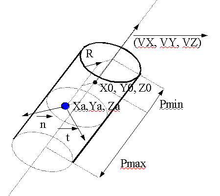
Blue
point is a mass
Figure 15: iCylinder3D
inlet 1:
bang
send to the masses the position and internal states of the interactors
setXYZ float float float (0 0 0)
set the (X, Y, Z) position of the interactor.
setX float
set the X position of the interactor.
setY float
set the Y position of the interactor.
setZ float
set the Y position of the interactor.
setVXYZ float float float (1 0 0)
set the (X, Y, Z) orientation vector of the cylinder
setVX float
set the X coordinate of the orientation vector
setVY float
set the Y coordinate of the orientation vector
setVZ float
set the Z coordinate of the orientation vector
setRmin float
set the minimum radius of the interactor
setRmax float
set the maximum radius of the interactor
sePmin float
set the minimum depth of the interactor
setPmax float
set the maximum depth of the interactor
setFN float
change the normal constant force to apply to a mass interacting with this object
setFT float
change the tangential constant force to apply to a mass interacting with this object
setKN float
change the normal rigidity (force proportional to R) to apply to a mass interacting with this object
setKT float
change the tangential rigidity (force proportional to R)
setD float
change the link damping
setRN float
change the normal force proportional to 1/R to apply to the mass
setG float
change the normal force proportional to 1/R2
setdN float
displace the mass without inertia.(normal displacement)
setdT float
displace the mass without inertia.(tangential displacement)
setdKN float
displace the mass without inertia.(normal displacement proportional to R)
setdKT float
displace the mass without inertia.(tangential displacement proportional to R)
outlet 1:
output a method for the mass2D, to allow interaction with this object.
tCylindre3D
description:
this is the test object associated with iCylinder3D. It can test different things associated with the position / movement of a mass among a cylinder.
creators: tCylindre3D, pmpd.tCylindre3D
arguments:
1: VX: X coordinate of the creation vector (1)
2: VY: Y coordinate of the creation vector (0)
3: VZ: Z coordinate of the creation vector (0)
4: X: X0 coordinate of the center of the interactor (0)
5: Y: Y0 coordinate of the center of the interactor (0)
6: Z: Z0 coordinate of the center of the interactor (0)
7: Rmin: minimum radius of the interactors (0)
8: Rmax: maximum radius of the interactor (1)
9: Minimal depth (-10000)
10: Maximal depth (10000)
inlet 1:
position3D float float float
position of a mass
setXYZ float float float
set the (X, Y, Z) position of the interactor.
setX float
set the X position of the interactor.
setY float
set the Y position of the interactor.
setZ float
set the Z position of the interactor.
setRmin float
set the minimum radius of the interactor
setRmax float
set the maximum radius of the interactor
setPmin float
set the minimum depth of the interactor
setPmax float
set the maximum depth of the interactor
outlet:
1: float (0/1) tells if the mass is in the in the Circle or not (R < Rmax & R > Rmin)
2: float: distance form the center of the cylinder
3: speed between the mass and the center of the cylinder
iCircle3D
description:
Create an interaction between a part of the space and a class of masses. This interactor act as a link to a circle.
creators: iCircle3D, pmpd.iCircle3D
arguments (default value):
1: name of the mass to interact with
2: VX: X coordinate of the orientation vector of the circle (1)
3: VY: Y coordinate of the orientation vector of the circle (0)
4: VZ: Z coordinate of the orientation vector of the circle (0)
5: X: X0 coordinate of the center of the interactor (0)
6: Y: Y0 coordinate of the center of the interactor (0)
7: Z: Z0 coordinate of the center of the interactor (0)
8: Rmin: minimum radius of the interactors (0)
9: Rmax: maximum radius of the interactor (1)
10: normal constant force (force along n vector) (0)
11: normal rigidity(normal force proportional to P (depth of the mass)) (0)
12: link damping (damping due to the link velocity) (0)
13: Maximal depth (10000)
14: normal constant displacement (0)
15: normal displacement proportional to P (0)
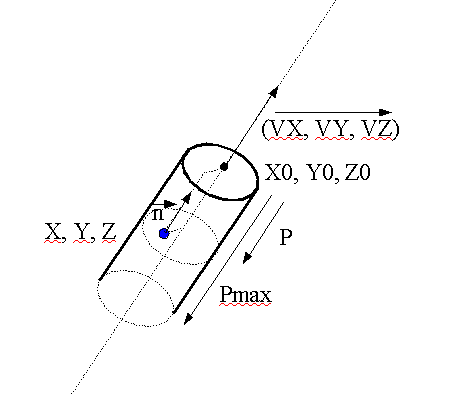
Blue
point is a mass
Figure 16: iCircle3D
inlet 1:
bang
send to the masses the position and internal states of the interactors
setXYZ float float float
set the (X, Y, Z) position of the interactor.
setX float
set the X position of the interactor.
setY float
set the Y position of the interactor.
setZ float
set the Z position of the interactor.
setVXYZ float float float
set the (X, Y, Z) orientation vector of the cylinder
setVX float
set the X coordinate of the orientation vector
setVY float
set the Y coordinate of the orientation vector
setVZ float
set the Z coordinate of the orientation vector
setRmin float
set the minimum radius of the interactor
setRmax float
set the maximum radius of the interactor
setFN float
change the normal constant force to apply to a mass interacting with this object
setKN float
change the normal rigidity to apply to a mass interacting with this object
setdN float
change the normal displacement
setdKN float
change the displacement proportional to P
setD float
change the link damping
setPmax float
change the maximum depth of the interactor
outlet 1:
output a method for the mass3D, to allow interaction with this object.
tCircle3D
description:
this is the test object associated with iCircle3D. It can test different things associated with the position / movement of a mass among a circle.
creators: tCircle3D, pmpd.tCircle3D
arguments:
1: VX: X coordinate of the orientation vector of the circle (1)
2: VY: Y coordinate of the orientation vector of the circle (0)
3: VZ: Z coordinate of the orientation vector of the circle (0)
4: X: X0 coordinate of the center of the interactor (0)
5: Y: Y0 coordinate of the center of the interactor (0)
6: Z: Z0 coordinate of the center of the interactor (0)
7: Rmin: minimum radius of the interactors (0)
8: Rmax: maximum radius of the interactor (1)
9: Pmax: maximum depth of the interactor (10000)
inlet 1:
position3D float float float
position of a mass
setXYZ float float float
set the (X, Y, Z) position of the interactor.
setX float
set the X position of the interactor.
setY float
set the Y position of the interactor.
setZ float
set the Z position of the interactor.
setVXYZ float float float
set the (X, Y, Z) orientation vector of the cylinder
setVX float
set the X coordinate of the orientation vector
setVY float
set the Y coordinate of the orientation vector
setVZ float
set the Z coordinate of the orientation vector
setRmin float
set the minimum radius of the interactor
setRmax float
set the maximum radius of the interactor
setPmax float
change the maximal depth of the interactor
outlet:
1: float (0/1) tells if the mass is in the in the Circle or not (R<Rmax & R>Rmin)
2: float: distance form the top of the circle
3: speed of the mass from the top of the circle
iPlane3D
description:
Create an interaction between a part of the space and a class of masses. This interactor act as a link to a plane.
creators: iPlane3D, pmpd.iPlane3D
arguments (default value):
1: name of the mass to interact with
2: Xv: X coordinate of the creation vector (normal to the plane) (1)
3: Yv: Y coordinate of the creation vector (0)
4: Zv: Z coordinate of the creation vector (0)
5: X: X0 coordinate of a point of a plane (0)
6: Y: Y0 coordinate of a point of a plane (0)
7: Z: Z0 coordinate of a point of a plane (0)
8: normal constant force (force along n vector) (0)
9: normal rigidity(normal force proportional to P (depth of the mass)) (0)
10: normal damping (damping due to the link velocity) (0)
11: Maximal depth (10000)
12: normal constant displacement (0)
13: normal displacement proportional to P (0)
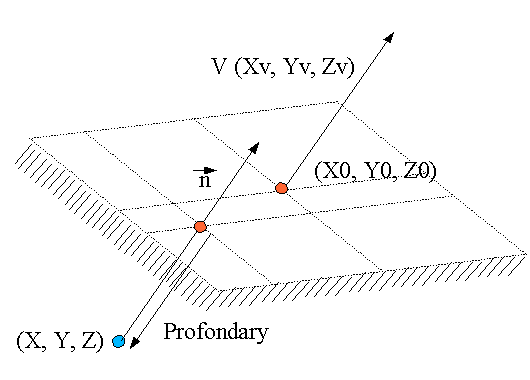
Blue
point is a mass
Figure 17: iPlane3D
inlet 1:
bang
send to the masses the position and internal states of the interactors
setXYZ float float float
set the (X, Y, Z) position of the interactor.
setX float
set the X position of the interactor.
setY float
set the Y position of the interactor.
setZ float
set the Z position of the interactor.
setVXYZ float float float
set the (X, Y, Z) orientation vector of the cylinder
setVX float
set the X coordinate of the orientation vector
setVY float
set the Y coordinate of the orientation vector
setVZ float
set the Z coordinate of the orientation vector
setPmax float
set the maximum depth of the interactor
setFN float
change the normal constant force to apply to a mass interacting with this object
setKN float
change the normal rigidity to apply to a mass interacting with this object
setdN float
change the normal displacement
setdKN float
change the displacement proportional to P
setD float
change the link damping
outlet 1:
output a method for the mass3D, to allow interaction with this object.
tPlane3D
description:
this is the test object associated with iPlane3D. It can test different things associated with the position or movement of a mass among a plane.
creators: tPlane3D, pmpd.tPlane3D
arguments:
1: name of the mass to interact with
2: VX: X coordinate of the creation vector (1)
3: VY: Y coordinate of the creation vector (0)
4: VZ: Z coordinate of the creation vector (0)
5: X: X0 coordinate of a point of a plane (0)
6: Y: Y0 coordinate of a point of a plane (0)
7: Z: Z0 coordinate of a point of a plane (0)
8: Maximal depth (10000)
inlet 1:
position3D float float float
position of a mass
setXYZ float float float
set the (X, Y, Z) position of the interactor.
setX float
set the X position of the interactor.
setY float
set the Y position of the interactor.
setZ float
set the Z position of the interactor.
setVXYZ float float
set the (X, Y, Z) orientation vector of the cylinder
setVX float
set the X coordinate of the orientation vector
setVY float
set the Y coordinate of the orientation vector
setVZ float
set the Z coordinate of the orientation vector
setPmax float
set the maximum radius of the interactor
outlet:
1: float (0/1) tells if the mass is in the in the Plane or not (P<0 & P>-Pmax)
2: float: depth of the point from the plane
3: depth speed
iSphere3D
description:
Create an interaction between a part of the space and a class of masses. This interactor act as a 3D link to a point.
creators: iSphere3D, pmpd.iSphere3D
arguments (default value):
1: name of the mass to interact with
2: X: X0 coordinate of the center of the sphere (0)
3: Y: Y0 coordinate of the center of the sphere (0)
4: Z: Z0 coordinate of the center of the sphere (0)
5: Rmin: minimum length of the link (0)
6: Rmax: maximum length of the link (0)
7: normal constant force (force along n vector) (0)
8: normal rigidity (normal force proportional to P (depth of the mass)) (0)
9: normal force proportional to 1/R
10: normal damping (damping due to the link velocity) (0)
11: normal constant displacement (0)
12: normal force proportional to 1/R2 (0)
13: normal displacement proportional to P (0)
14: normal displacement proportional to 1/R (0)
15: normal displacement proportional to 1/R2 (0)
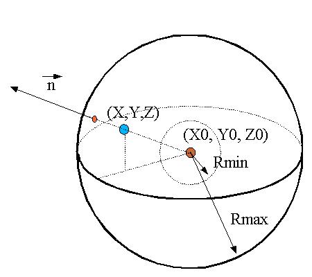
Blue point is a mass, red point is the center of the iSphere3D
Figure 18: iSphere3D
inlet 1:
bang
send to the masses the position and internal states of the interactors
setXYZ float float float
set the (X, Y, Z) position of the interactor.
setX float
set the X position of the interactor.
setY float
set the Y position of the interactor.
setZ float
set the Z position of the interactor.
setRmin float
set the minimum radius of the interactor
setRmax float
set the maximum radius of the interactor
setFN float
change the normal constant force to apply to a mass interacting with this object
setKN float
change the normal rigidity to apply to a mass interacting with this object
setFRN float
change the normal force proportional to to apply to 1/R
(R is the distance from the center of the sphere)
setDN float
change the normal damping
setdN float
change the normal displacement
setdRN float
change the normal displacement proportional to 1/R to apply to the mass
setG float
change the normal force proportional to 1/R2
setdKN float
change the normal displacement proportional to R
setdG float
change the normal displacement proportional to 1/R2 to apply to the mass
outlet 1:
output a method for the mass3D, to allow interaction with this object.
tSphere3D
description:
this is the test object associated with iSphere3D. It can test different things associated with the position / movement of a mass among a point.
creators: tSphere3D, pmpd.tSphere3D
arguments:
1: name of the mass to interact with
2: X: X0 coordinate of a point of a plane (0)
3: Y: Y0 coordinate of a point of a plane (0)
4: Z: Z0 coordinate of a point of a plane (0)
5: Rmin (0)
6: Rmax (1)
inlet 1:
position3D float float float
position of a mass
setXYZ float float float
set the (X, Y, Z) position of the interactor.
setX float
set the X position of the interactor.
setY float
set the Y position of the interactor.
setZ float
set the Z position of the interactor.
setRmin float
set the minimum radius of the interactor
setRmax float
set the maximum radius of the interactor
outlet:
1: float (0/1) tells if the mass is in the in the Plane or not (P<0 & P>-Pmax)
2: float: depth of the point from the plane
3: depth velocity
Conclusion
pmpd provides basic objects for flexible behavior simulation of dynamic systems. Its basic components are specially suited for particular physical modelling.
It can be used for the simulation of many different systems without requiring knowledge of the equations describing the movement. Gravitation, structures, fluid dynamics, and Brownian movement are some examples of such systems. It provides a flexible data generating tool for controlling audio synthesis modulation, rhythmic generation, or any other musical process, but can be also used simply for data processing. Naturally, it can be use for video animations where physical behavior is desired, as well as to create smooth transitions and natural evolution of these behaviors.
Thanks to ben@ekran.org for the discussions, ali@cnmat.berkeley.edu for porting this object for Max/MSP and helping with the documentation, and Thierry.Coduys@la-kitchen.fr for supporting this work.
Change since previous version
0.05:
-add 3D interactors and test objects
-add examples
0.04:
-add 2D interactors and test objects
-add docs
-add examples
-add helps files
0.03:
-each object receives a name and receives whatever is sent to this name, specially bang... (routing is then easier)
0.02:
-things change in the initialisation procedure
-creation arguments changes
-add some messages to mass/link.
-add the possibility for the link to learn its size from the model
0.01:
-basic objects.
Licence
This program is written by Cyrille Henry (cyrille.henry@la-kitchen.fr)
Get sources at http://drpichon.free.fr/pmpd/
This program is free software; you can redistribute it and/or
modify it under the terms of the GNU General Public License
as published by the Free Software Foundation; either version 2
of the License, or (at your option) any later version.
This program is distributed in the hope that it will be useful,
but WITHOUT ANY WARRANTY; without even the implied warranty of
MERCHANTABILITY or FITNESS FOR A PARTICULAR PURPOSE. See the
GNU General Public License for more details.
You should have received a copy of the GNU General Public License
along with this program; if not, write to the Free Software
Foundation, Inc., 59 Temple Place - Suite 330, Boston, MA 02111-1307, USA.
Based on PureData by Miller Puckette and others.
Links
[1] http://drpichon.free.fr/pmpd/
[2] http://www.crca.ucsd.edu/~msp/software.html
[3] http://web.ukonline.co.uk/taosynth/
[4] http://www-2.cs.cmu.edu/~fp/courses/02-graphics/pdf-2up/12-physical.pdf
[6] http://www.pure-data.org/downloads/
[7] http://ccrma-www.stanford.edu/~cc/misc-papers/ica04.pdf
[8] http://perso.wanadoo.fr/gmem/evenements/jim2002/articles/L09_Castagne.pdf
[9] http://acroe.imag.fr/ACROE/recherche/cordis-anima/cordis-anima.html
[10] http://profs.sci.univr.it/~fontana/paper/21.pdf
[11] http://www.music.columbia.edu/PeRColate/
[12] http://echo.gaps.ssr.upm.es/costg6/bibliography/proceedings/djoharian.pdf
[14] http://gem.iem.at/
Cyrille Henry 02
/ 2004